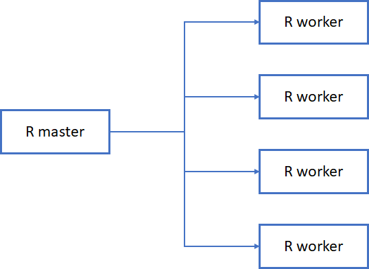
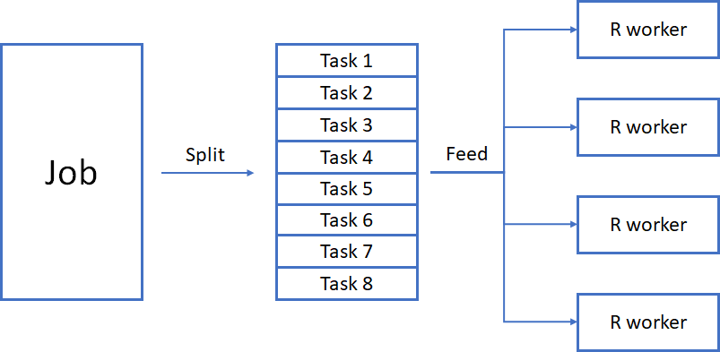
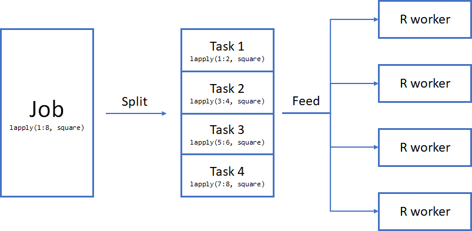
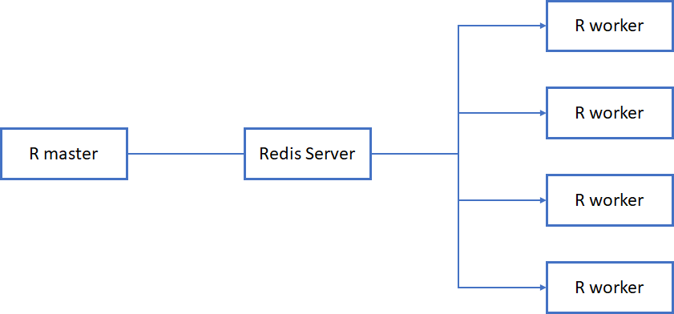
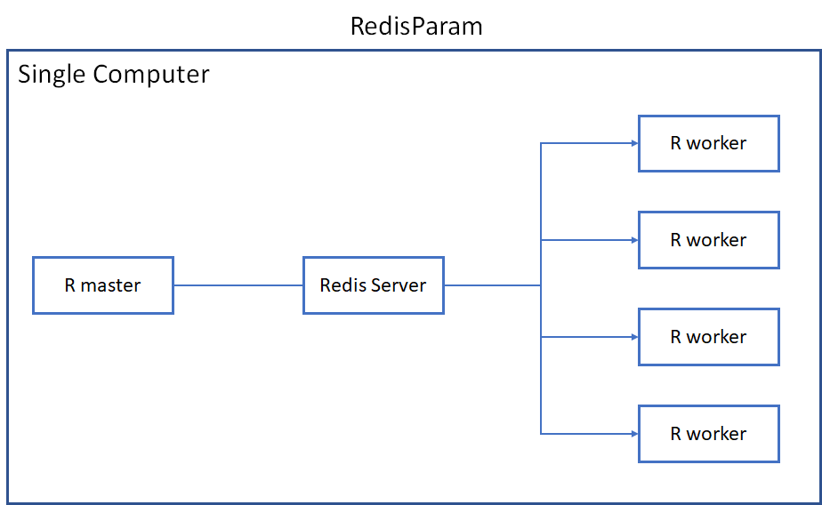
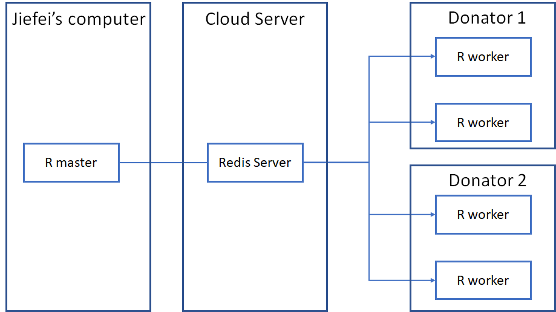
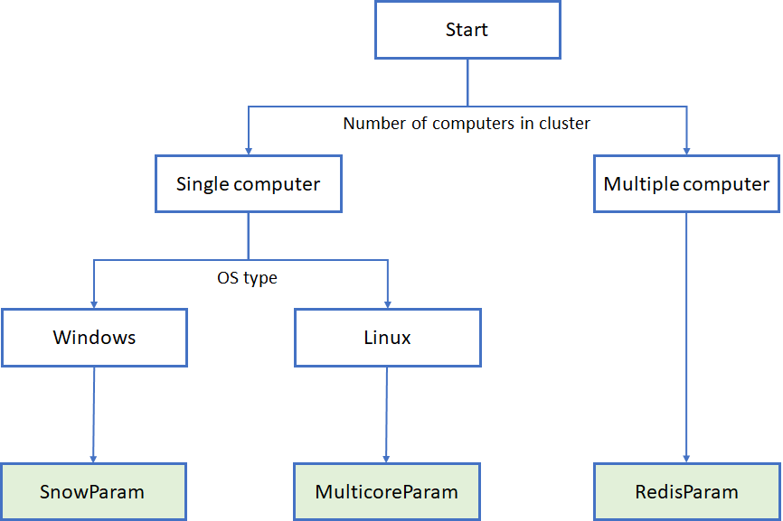
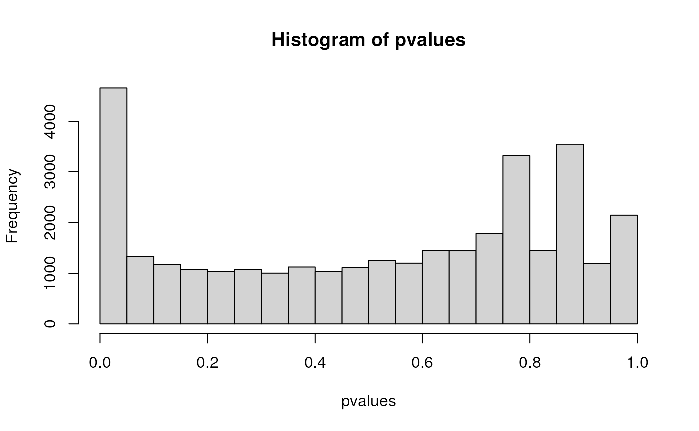

High-Performance Computing in R for Genomic Research
Jifei Wang1
Source:vignettes/workshop.Rmd
workshop.RmdHigh-Performance Computing in R for Genomic Research
In this vignette, we will introduce the basic concepts of parallel computing and how to use parallel computing in R. We will also introduce the BiocParallel package and how to use it to speed up your analysis. This is a lecture + lab workshop, most content in this vignette will be covered in the lecture slides. This vignette serves as a reference for the workshop. In this lecture, no prior knowledge of parallel computing is required, but basic knowledge of R syntax is needed to complete this workshop.
Participation
To follow the lecture, you can either use your own Rstudio and install the required package(see package DESCRIPTION), or use the Rstudio at Bioconductor Workshop Galaxy (recommended). The Rstudio is free to use, but you need to register an account first.
Parallel Computing Packages in R
There are many parallel packages in R, here are some of the most popular ones:
- parallel
- foreach
- BiocParallel
- future
In this workshop, we will focus on the BiocParallel package, which is the official parallel package used in Bioconductor.
R / Bioconductor packages used
- BiocParallel
- RedisParam
- SummarizedExperiment (in example only)
- airway (in example only)
- DESeq2 (in example only)
Useful Materials
- Introduction to BiocParallel
- Random Numbers in BiocParallel
- Errors, Logs and Debugging in BiocParallel
- Jiefei Wang’s email: szwjf08@gmail.com (Questions, discussions, and collaborations are welcome)
Time outline
| Activity | Time |
|---|---|
| Introduction | 20m |
| Parallelization using BiocParallel | 30m |
| General tips for Parallel computing | 20m |
| Examples | 20m |
Introduction
With the recent “core war” between Intel and AMD, two major CPU manufacturers, the number of cores in a CPU has been increasing rapidly. For example, the latest AMD Ryzen 9 7950X is equipped with 16 cores and 32 threads. This monster-level CPU provides a huge amount of computing power for performing large-scale data analysis. However, most of the time, we are not using the full power of our CPU as R is designed as a single-threaded programming language. This design makes R easy to learn and use, but it also limits the computing power of R. In this workshop, we will introduce how to use parallel computing to fully utilize the power of your CPU and build your at-home computing cluster.
While parallel computing may sound fancy and complicated, it is very simple at its core. Many packages in R can help you to do parallel computing, and they all share the same basic idea: split a job into smaller tasks and run them simultaneously. For example, if you need to perform 1000 additions, you can either do it one by one by yourself, or you can ask 10 friends to do 100 additions each(be sure to treat them a nice dinner afterward). If you choose the latter, you are doing parallel computing. In computer science, we usually call you the “master” and your friends the “workers”. Without loss of generality, parallel computing in R involves the following steps:
- Start a master process
- Start worker processes
- Split a job into smaller tasks
- Send tasks to workers
- Receive and combine results from workers
There are two important concept in parallel computing: cluster structure and job-splitting scheme. The cluster structure decides where to find the workers and how to communicate with them(steps 1,2, and 4). The job-splitting scheme decides how to split a job into smaller tasks and send them to the workers(step 3). The simplest cluster is shown in the following figure: 
The structure above shows a master R session connected with 4 workers. The key point of this structure is that the master and workers can directly talk with each other without any message relay. The master and workers can be in a single computer or different computers. However, as you will see in the later section of this workshop, this structure works best if both master and workers are in the same machine. The situation will become complicated if you want to use multiple computers as workers.
The job-splitting scheme decides how to split a job into smaller tasks and send them to the workers. The job-splitting scheme is shown in the following figure: 
In parallel computing, we call the thing you want to compute a “job”. A job is usually a loop or a function that you want to run multiple times. We split the job into smaller “tasks” and send them to the workers. By doing this we can run multiple tasks simultaneously.
The cluster structure and job-splitting scheme give a big picture of parallel computing. In practice, we find that it will be helpful to think about the following three questions before you start your parallel computing:
- Where to create the workers
- How do you communicate between the master and the workers
- How the job will be splitted
The answer to these three questions determines the best way to construct your computing cluster and the best parallel function to use.
Parallalization In BiocParallel
The BiocParallel package is a parallel package developed and
maintained by the Bioconductor core team and its alumnus. It is a highly
customizable package equipped with modern design. Assume that you have a
poorly written function square that takes at least 1 second
to calculate the square of a number
We want to calculate the square of the numbers from 1 to 8. There are two ways to do this:
## Method 1: for loop
for(i in 1:8){
message(square(i))
}
#> 1
#> 4
#> 9
#> 16
#> 25
#> 36
#> 49
#> 64
## Method 2: lapply
lapply(1:8, square)
#> [[1]]
#> [1] 1
#>
#> [[2]]
#> [1] 4
#>
#> [[3]]
#> [1] 9
#>
#> [[4]]
#> [1] 16
#>
#> [[5]]
#> [1] 25
#>
#> [[6]]
#> [1] 36
#>
#> [[7]]
#> [1] 49
#>
#> [[8]]
#> [1] 64With no surprise, both methods will take 8 seconds to finish. Since calculating the square of a number is independent of each other(e.g. square(1) does not depend on square(2)), we can parallelize this code to speed up the calculation
## Load the BiocParallel package
library(BiocParallel)
## Define 4 workers
param <- SnowParam(worker = 4)
## dispatch the job to workers,
## each of them will execute the function foo twice
bplapply(1:8, square, BPPARAM = param)
#> [[1]]
#> [1] 1
#>
#> [[2]]
#> [1] 4
#>
#> [[3]]
#> [1] 9
#>
#> [[4]]
#> [1] 16
#>
#> [[5]]
#> [1] 25
#>
#> [[6]]
#> [1] 36
#>
#> [[7]]
#> [1] 49
#>
#> [[8]]
#> [1] 64The function SnowParam defines 4 workers that we are
going to use in the parallel computation. You do not have to explicitly
specify the argument worker in any Param
function, so SnowParam(4) will work equally well. In
BiocParallel, we call a cluster of workers a backend (as they are
working in the background). The master and workers communicate with each
other directly via a network protocol named SNOW(so the name SnowParam).
The cluster structure of this example is shown in the following figure:

The function bplapply is a parallel version of the lapply function. It dispatches 8 elements in the vector 1:8 to 4 workers in the backend. If we use our job-splitting schematic diagram, it will look like this

In this case, the master R will evenly split the 8 elements into 4 tasks and send them to the workers. Each worker will calculate the square of 2 numbers and return their results. . In theorem, it will take 2 seconds to finish the calculation.
We can use system.time to benchmark the running time of the lapply function and the bplapply function
> system.time(lapply(1:8, square))
user system elapsed
0.00 0.00 8.06
> system.time(bplapply(1:8, square, BPPARAM = param))
user system elapsed
0.33 0.10 4.95 In my computer, it takes 8.06 seconds to finish the lapply function and 4.95 seconds to finish the bplapply function. We do see the improvement in running time, but it is not as good as we expected. This is because there is some overhead associated with parallelization. In this example, the cost of parallelization is about 3 seconds. We will discuss how to improve the performance of parallel computing later in this workshop, but for now, let’s ignore it and think about the three questions we mentioned in the previous section:
Where to create the workers: You possibly can guess the answer to this question, we create 4 workers on the same computer as the master process. There is no magic in computer science, if you have one computer running your R code, there is no way for R to “enslave” your neighbor’s computers to do your homework. So, the workers must be on the same computer as the master process.
How do you communicate between the master and the workers: In this example, we are using a network protocol named SNOW to communicate between the master and the workers(so the name SnowParam). You don’t need to worry about the details of the socket protocol, the parallel packages will take care of it for you.
How the job will be splitted: In this example, we evenly divived the job by the number of workers. This is the default behavior of BiocParallel package. You can change the behavior by specifying the argument
taskswhen creating the SnowParam.
In practice, question 1 and 2 are related. The location of the worker determines the appropriate communication method between the master and the workers. Generally speaking, it will be sufficient to use the SnowParam function to do parallel computing on your local computer. However, as your code becomes more computing-intensive, you may want to connect with other computers to speed up the calculation. We will introduce some other backends in the following sections that will be helpful to solve a more complicated parallel computing problem.
MulticoreParam (Linux only, or WSL2 for Win Users)
MulticoreParam is similar to SnowParam, but it has the potential to reduce the overhead associated with parallelization. Traditionally, if we create a worker and give it a task, the worker will need the data to do the calculation. This data will be sent by the master process to the worker and takes a certain amount of memory. If we have 4 workers, we will have 4 copies of the data. This is not a problem if the data is small, but it will be a problem if the data is big. MulticoreParam is used to alleviate this problem. MulticoreParam is a special type of backend that allows workers and the master to share the same data in memory(they must be on the same computer). This means that we only need one copy of the data in memory. To define a MulticoreParam, you only need to replace the SnowParam with MulticoreParam in the previous example.
## Define 4 workers
param <- MulticoreParam(4)
## dispatch the job to workers,
## each of them will execute the function foo twice
bplapply(1:8, square, BPPARAM = param)
#> [[1]]
#> [1] 1
#>
#> [[2]]
#> [1] 4
#>
#> [[3]]
#> [1] 9
#>
#> [[4]]
#> [1] 16
#>
#> [[5]]
#> [1] 25
#>
#> [[6]]
#> [1] 36
#>
#> [[7]]
#> [1] 49
#>
#> [[8]]
#> [1] 64You can see that changing the backend only requires changing the definition of the param. The rest of the code is the same. This modern design allows you to write your parallel code without being tied to a specific backend. You can easily switch between different backends without changing your code. This is a very important feature of the BiocParallel package. The cluster structure of MulticoreParam is the same as SnowParam. The only difference is how the workers get started (This is not completely true, but it is good enough for our workshop).
RedisParam
Now you know how to create a tiny computing cluster in your local computer. However, our demand for computing power is endless and we will quickly find that a single computer is not enough to handle our computing task. We are still able to use the SnowParam to create a cluster with multiple computers as SNOW is a network protocol. In this case, the cluster structure might become like this:

In this structure, we have three computers. Computer 1 has the master process and computers 2 and 3 have two workers each. We use IP addresses to communicate between the master and the workers. The IP address serves as the address of the computer. It is like the address of your house. If you want to send a letter to your friend, you need to know the address of your friend. The same thing happens here. We need to know the IP address of the worker’s computer(computers 2&3) to talk to the workers inside. With this schematic diagram, you will quickly find that the SnowParam is cumbersome for a large cluster because:
- Each worker computer must have a public IP address to access
- The workers are not persistent, they will be killed when the master process quits.
- You need to set up an SSH server and keys for all workers in order to start workers remotely (Remember that computers 2 and 3 might not be physically accessible)
These three problems hinder the usage of SnowParam when handling larger computing clusters. RedisParam is designed for this case. Instead of having direct communication between master and workers, RedisParam put a Redis server in the middle. The diagram below shows the general cluster structure of this kind of design

Note that the three components(master, Redis Server, and workers) in the diagram can run in the same machine or different machines. However, only the Redis Server is required to have a public IP address. The role of the Redis server is similar to the role of Bioconductor Slack workspace. If you have a question(computing job) and you want to get help from the other developers(workers). Do you want to message each developer individually? Possibly not, if we use this mode to ask questions, you may need to send thousands of messages to get the answer to your question. Meanwhile, our enthusiastic developers will be overwhelmed by tons of questions as well. To prevent that happens, Bioconductor hosts a Slack workspace for Q&A. You are free to post any question to a Slack channel, and our lovely developers will answer whatever question they can answer. A similar thing happens to RedisParam as well. A master process will send the job to the Redis server. The workers will receive tasks from the Redis server and do the calculation. By doing that, the lifecycle of the workers is not tied to the master process, but to the Redis server. You can even have more than one master process sharing a pool of workers, just like everyone is welcome to ask questions in Slack.
Set Up Redis Server
The use of RedisParam requires a little bit more work. We need to set up a Redis server. The easiest way to do that is to use the docker image of Redis. Here is the instruction to install docker on your computer. You will need WSL2(Windows Subsystem for Linux) if you are using Windows. After you have installed docker, you can run the following command to start a Redis server.
docker run --name my-first-redis -p 6379:6379 -d redis redis-server --requirepass "bioc2023"The command above will start a Redis server on port 6379 with
password bioc2023. The port number 6379 is the default port used by the
Redis server. We use -p 6379:6379 to open that port to the
outside world, so you can access the Redis server in the container from
your computer.
Alternatively, you might want to host the Redis server in the cloud. You can find the container service through all major cloud service providers such as Azure and Amazon. In this workshop, we provide a pre-configured Redis server running in the background in the workshop container. You are ready to go if you are using the workshop container
Run master and workers in the same computer
If you have the Redis server running on your computer. You can use the following code to create a RedisParam cluster.
library(RedisParam)
## Define 4 workers using Redis server
param <- RedisParam(
workers = 4,
redis.password = 'bioc2023'
)
## Test the cluster
bplapply(1:4, square, BPPARAM = param)The code is not that different from the SnowParam and MulticoreParam. The RedisParam will create 4 workers that connect to the Redis server on localhost(your computer) using the password bioc2023. If we use the cluster structure diagram, it will look like this:

All three components(master, Redis server, and workers) are in the same machine. There is no need to use RedisParam if we only have one computer. We will introduce how to run master and workers on different computers in the next section.
Run Master and Workers in Different Computers
The real power of RedisParam comes in when you want to connect with multiple computers to create a large cluster. In this case, you need a Redis server that is accessible by all the computers (Otherwise, how can they talk to each other?). There are two things you need for using RedisParam
- the IP address of the Redis server.
- The name of the job queue shared by master and workers
We have discussed the idea of the IP address in the previous section. The job queue is a new concept here. A job queue is like a channel in Slack, it’s a place where you can post your question and get answers from other developers. A master process can only be in one job queue at a time. It can post its computing tasks to the job queue. The workers enrolled in the same job queue will retrieve the tasks from the job queue and execute them. Multiple master processes can enroll in the same job queue. Therefore, they can share the same pool of workers. A Redis server can have multiple job queues running at the same time without interfering with each other. Just like a Slack workspace can have multiple channels at the same time.
Start Workers
In this workshop, we will set up a remote Redis server for you. We ask you to “donate” some workers to our demo job queue.
## Redis server IP. To be announced in the workshop
host <- 'remote-Ip-address'
## Define how many workers you want to "donate"
param <- RedisParam(
workers = 2,
redis.hostname = host,
redis.password = 'bioc2023',
jobname = "demo",
is.worker = TRUE
)
## Start the worker
## This will block the entire R session
## You CANNOT use ctrl + c to stop the worker
## Don't be panic, I will free you after a minute
bpstart(param)A few new things to note here. We use redis.hostname to specify the IP address of the Redis server. We use jobname to specify the job queue we want to use. The job queue is identified by a character name. We use is.worker = TRUE to tell RedisParam that we want to start two workers. If is.worker = FALSE, the argument workers will be ignored and the backend will be used as a master. If we do not specify the argument is.worker, The backend will contain both master and workers by default. The cluster diagram of the current setup is shown below.

This will be the most complicated cluster we will build in this workshop. You can see the power of RedisParam: The master and workers can be in different computers. The master and workers can be in different physical locations. The number of workers can be dynamic. As long as the Redis server is accessible by all the computers, they can form a cluster.
Start a master
Creating a master is similar to creating a worker. The only difference is that we set is.worker = FALSE. We create a random job name so that all of us can share the same Redis server to do the computation.
## Redis server IP. To be announced in the workshop
host <- 'remote-Ip-address'
## Create a ramdom jobname
jobname <- ipcid()
message("My job queue: ", jobname)
## Create a master param
param <- RedisParam(
redis.hostname = host,
redis.password = 'bioc2023',
jobname = jobname,
is.worker = FALSE
)Note that this master param cannot be
used to do the computation right now, as the job queue is not monitored
by any workers (You wouldn’t expect to get any message from a Slack
channel with no members, right?). You need the code from the previous
section to start your worker elsewhere and connect with the same job
queue. While the order of starting the master and workers doesn’t
matter, you need to have your workers ready before you use your master
param to do the actual computation.
Mind Map
Below is the mind map that can help you choose different parallel backends. Please note that this mind map serves as a recommendation only. You can always try different parallel backends to see which one works best for you.

Special Topics
Additional Argument
It is very common to have additional arguments in an R function. For
example, if we have an add function add that takes two
arguments x and y
add <- function(x, y){
x + y
}In bplapply, the second argument y in
add can be set by passing a (named) argument to
... in bplapply
bplapply(1:4, add, y = 1, BPPARAM = SnowParam(2))
#> [[1]]
#> [1] 2
#>
#> [[2]]
#> [1] 3
#>
#> [[3]]
#> [1] 4
#>
#> [[4]]
#> [1] 5You can pass as many arguments as you need after specifying the
function you are applying in bplapply (in our case, it is
the function add). Although the argument name is not
required, we recommend you use it for clarity.
Error Handling
In practice, it is inevitable to have bugs in your code. The
bplapply function will stop if it encounters an error.
Reading the error message can help you to better debug the code.
However, the error is not always understandable. We provide three
general tips to help you debug the code
- Shortening the first argument
Xinbplapply - Start with a smaller worker number
- Try SerialParam
Shortening the first argument X in
bplapply
Shortening the first argument X in bplapply
not only reduces the time you will need to wait until observing an
error. It also simplifies the code you are trying to debug. If you want
to ask others for help. Having a short and reproducible code is always a
good idea.
Start with a smaller worker number
Since each worker takes a certain amount of resources, the error may be caused by the lack of resources (E.g. insufficient memory). Starting with a smaller worker number can help you to exclude this possibility. Meanwhile, having a smaller number of workers can make it easier for others to run your code(e.g. no one wants to reproduce your error with 128 workers).
Try SerialParam
If you are not sure whether the error is caused by the workers, you
can try to use SerialParam to run your code in a single
process. SerialParam is a special backend that does not use
any parallel computing and runs your code in the current R session. You
can even use a debugger to debug your code. For example, you can debug
the add function during the single-threaded parallel
computing by using the following code
add2 <- function(x, y){
browser()
x + y
}
bplapply(1:4, add2, 1, BPPARAM = SerialParam())The R session will stop before executing x + y
Loading balance
In some cases, the function execution time can be uneven. For example, if we have the following code
Even without overhead in parallel computing, the code above will take
7 seconds to finish. The reason is that the second worker needs to
calculate wait(3) and wait(4). It will cause
the second worker to sleep for 7 seconds. Although the first worker only
needs 3 seconds to finish. bplapply must wait until all the
workers finish their jobs. We call this situation unbalanced
loading.
One solution for solving unbalanced loading is to increase the
granularity of the task. Recall that bplapply will split
the first argument X into smaller pieces(tasks) and assign
them to the workers. The number of tasks is equal to the number of
workers by default. However, we can force it to create more tasks than
the workers by setting the argument tasks in
SnowParam. For example, the code below will create 4 tasks
for 2 workers.
If you want each task to contain exactly one element of
X, you can set task=.Machine$integer.max.
However, please note that this will increase the overhead in parallel
computing.
Progress bar
Enabling the progress bar is very easy. You just need to set
progressbar = TRUE in SnowParam. However, the
progress bar can only be updated when a worker returns a result. Since a
worker only returns results when it completes a task, you might observe
a “bump” in the progress bar each time a worker completes a task. To
have a smoother progress bar, you need to consider to increase the
granularity of the task. The code below shows the most smooth progress
bar you can get with bplapply
optimization
To optimize the performance of parallel computing, you need to understand the source of overhead in parallel computing. There are four parts of overhead in parallel computing
- Worker creation
- Data transfer
- Job splitting
- Worker environment preparation
While items 3 and 4 are handled internally in BiocParallel and thus
unavoidable, you can reduce the overhead from items 1 and 2 by using the
following tips. Note that the tips are for SnowParam. If
you are using MulticoreParam, the overhead of items 1 and 2
are negligible and therefore there is no need to optimize them.
Create workers in advance
Creating workers is a time-consuming process. If we do not explicitly
create workers, bplapply will create workers when it is
called and stop the workers when it finishes. Therefore, if you want to
call bplapply repeatedly, you might want to create workers
in advance to avoid the overhead of worker creation. The code below
shows how to manually create workers
## Define a SnowParam backend
param <- SnowParam(2)
## Manually Create workers
bpstart(param)
## Run a parallel computing job
bplapply(1:4, add, y = 1, BPPARAM = param)
## Manually stop workers
bpstop(param)We can also time the code above to see the overhead of worker creation
## Parallel code without worker creation
system.time({
bplapply(1:4, add, y = 1, BPPARAM = param)
})user system elapsed
0.62 0.08 2.09
## Parallel code with worker creation in advance
bpstart(param)
system.time({
bplapply(1:4, add, y = 1, BPPARAM = param)
})
bpstop(param)user system elapsed
0.21 0.03 0.48 In Rstudio, it takes about 1.5 seconds to create 2 workers. The cost will be more significant if you have more workers, or if the workers are created in a remote machine.
Avoid data transfer
Data transfer is another source of overhead in parallel computing. It
is especially significant when the data is large. Data transfer should
be kept to a minimum level if possible. A general strategy is to avoid
using a large R object during parallel computing. However, we understand
this requires a redesign of the algorithm and is not always possible. In
this section, we provide a simple tip that can reduce the data transfer
in some cases. You can disable exporting R environment variables by
setting exportglobals = FALSE in
SnowParam.
param <- SnowParam(2, exportglobals = FALSE)This will prevent bplapply from exporting the R
environment variables to the workers. It is especially important when
you are using RStudio as RStudio will define many environment variables
for you.
Examples
Example 1: Monte Carlo Simulation
Parallel computing is usually used in simulation and permutation. In this example, we will use simulation to demonstrate the parallel computing. We want to calculate the distribution of the T statistic given that the null hypothesis is true(group means are equal)
## Sample size for each group
n <- 10000
## Simulate from the uniform distribution
x <- runif(n)
y <- runif(n)
## Calculate t statistic
t.test(x,y)$statistic
#> t
#> -0.2924725The code above generates two samples from the uniform distribution and calculates the t statistic. We wrap the code in a function so that we can use it in the parallel backend
Note that the argument i is purely for the
bplapply function and does not have any meaning. Suppose we
want to repeat the simulation 10000 times, we first use the
lapply function to measure the baseline time
system.time(
lapply(1:10000, mySim, n = n)
)user system elapsed
7.92 1.00 8.91In my computer, it takes about 9 seconds to finish the computation.
Now we use bplapply to do the same thing and see the
performance improvement using all the optimization methods we have
learned so far
library(BiocParallel)
param <- SnowParam(10, exportglobals = FALSE)
bpstart(param)
system.time({
res <- bplapply(1:10000, mySim, n = n, BPPARAM=param)
})
bpstop(param)user system elapsed
0.23 0.00 1.47 It takes about 1.5 seconds to finish. We can see that the performance is improved by a factor of 6. The performance improvement is not as good as we expected. This is because the simulation is still too simple and the overhead of parallel computing is large compared to the actual computation. However, as the tasks get more complicated, the performance improvement will be more significant.
Example 2: Permutation for Finding the Null Distribution
In this example, we will do a permutation to show the conditional null distribution of the Berk-Jone statistic. The Berk-Jones statistic is designed to test if a set of p-values are from a uniform distribution. In other words, it aims to test if all p-values are from the null distribution. It is known that calculating the exact distribution of Berk-Jones statistic is computationally intensive. Therefore, we will use the permutation method to approximate the distribution. Below is the code to calculate the Berk-Jone statistics
BJStat <- function(samples){
samples[samples==0] <- 1e-10
samples[samples==1] <- 1-1e-10
samples <- sort(samples)
i <- seq_along(samples)
min(pbeta(samples, i, length(samples)-i+1))
}
## Test the function
## Small value implies the significance
BJStat(runif(10))
#> [1] 0.484119We will use airway data in the airway package as an
example. We first load the data into R.
library(SummarizedExperiment)
data(airway, package="airway")
## Counts matrix
## Row: RNA-Seq reads
## Column: samples
counts <- assays(airway)$counts
dim(counts)
#> [1] 63677 8
## Treatment group
groups <- colData(airway)$dex
groups
#> [1] untrt trt untrt trt untrt trt untrt trt
#> Levels: trt untrtThe variable counts has 63677 rows and 8 columns. Each
row represents a gene and each column represents a sample. The variable
groups is a factor variable that indicates the treatment
group of each sample.
We will use DESeq pipeline to perform a negative binomial test and obtain the p-value for each gene. Because we will reuse the pipeline many times in the permutation, we can wrap the pipeline into a function.
## my negative binomial test
myNBTest <- function(counts, groups){
library(DESeq2)
# Create a data frame for the grouping variable
colData <- data.frame(group = factor(groups))
# Create a DESeqDataSet object
dds <- DESeqDataSetFromMatrix(countData = counts,
colData = colData,
design = ~ group)
# Run the DESeq pipeline
dds <- DESeq(dds, quiet=TRUE)
# Get the results
pvalues <- results(dds)$pvalue
# Exclude NA values
pvalues[!is.na(pvalues)]
}We can put everything together and perform the Berk-Jones test on the p-values.
pvalues <- myNBTest(counts, groups)
## Histogram
hist(pvalues)
## Test if all p-values are from the uniform distribution
BJStat(pvalues)
#> [1] 0Now we have all the ingredients ready, we can start the permutation. We will randomly shuffle the group labels and perform the Berk-Jones test on the shuffled data. We wrap the permutation into a function.
myPermutation <- function(i, counts, groups){
## Randomly shuffle the group labels
groups <- sample(groups)
## Perform the Berk-Jones test
pvalues <- myNBTest(counts, groups)
## Return the Berk-Jones statistic
BJStat(pvalues)
}The variable i is purely for the bplapply
function and does not have any effect. Let’s test and benchmark our
permutation function
system.time({
res <- myPermutation(i, counts, groups)
}) user system elapsed
10.14 0.19 10.34 It takes 10 seconds for a single permutation. We will try to permute the data 50 times in a parallel fashion. The parallel code is shown below.
library(BiocParallel)
## I use 10 workers in my computer
## You might want a different number
param <- SnowParam(10, exportglobals = FALSE)
bpstart(param)
## Repeat permutation 100 times
## and return a vector
system.time({
res <- bplapply(1:100, myPermutation, counts, groups, BPPARAM=param)
})
bpstop(param)user system elapsed
0.20 0.09 128.84 In my computer, it takes 128 seconds to finish. It is estimated that
the single-threaded lapply will take 1000 seconds to finish
the same computing job. We have about 7.8 times speedup. We are one step
closer to the theoretical speedup of 10.